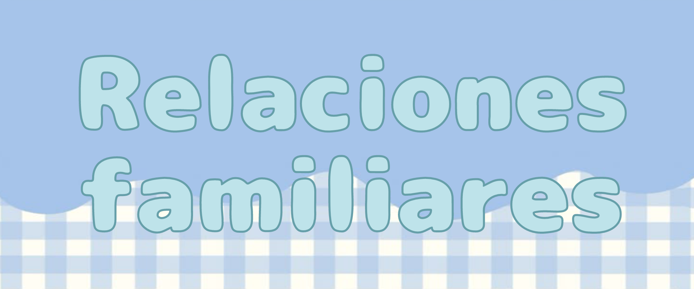

Las relaciones familiares son interacciones entre los miembros de una familia, que pueden ser saludables, disfuncionales o una combinación de ambos, y que influyen en el bienestar de cada persona. Estas relaciones se basan en la comunicación, el respeto, la empatía, el apoyo mutuo y la definición de límites claros.
Las relaciones familiares cercanas le ofrecen a una persona una mejor salud y bienestar, así como tasas más bajas de depresión y enfermedades a lo largo de toda la vida. Pero en muchas familias, llevarse bien no está por sentado. La interacción entre varios miembros está en el núcleo de estas dinámicas complicadas. Podemos bromear sobre las fuentes estereotipadas de la falta de armonía, el tío desagradable y el hijo que no está bien, pero factores como el medio ambiente y las rivalidades entre hermanos surgen cuando se considera la viabilidad y la estabilidad de las redes familiares.
✩₊˚.⋆ Características de las relaciones familiares saludables: ⋆⁺₊✧


⌗ೀ Comunicación abierta y honesta:
Se fomenta el diálogo, la escucha activa y el compartir de sentimientos y opiniones.
⌗ೀ Respeto mutuo:
Se valoran las individualidades de cada miembro de la familia, incluso cuando hay desacuerdos.
⌗ೀ Empatía y apoyo:
Se comprende y se ayuda a los miembros de la familia en momentos difíciles.
⌗ೀ Límites claros:
Se establecen límites saludables para proteger el bienestar de cada persona.
⌗ೀ Afecto y cercanía:
Se promueve la conexión emocional y la confianza entre los miembros de la familia.
˚ ༘ Importancia de las relaciones familiares:ೀ⋆｡˚
⌗ೀ Bienestar emocional:
Las relaciones familiares saludables contribuyen al bienestar emocional de cada persona, promoviendo la autoestima y la seguridad.
⌗ೀ Desarrollo social:
La familia es el primer grupo social al que pertenece una persona, y las relaciones familiares influyen en su capacidad para relacionarse con otros.
⌗ೀ Apego y seguridad:
Los lazos familiares seguros y saludables brindan a las personas una base de apoyo emocional a lo largo de su vida.
⌗ೀ Patrones de comportamiento:
Las relaciones familiares influyen en la forma en que una persona se relaciona con los demás, estableciendo patrones de comportamiento que pueden repetirse a lo largo de la vida.


⛧°。 ⋆༺˗ˏˋ ★ ˎˊ˗༻⋆。 °⛧